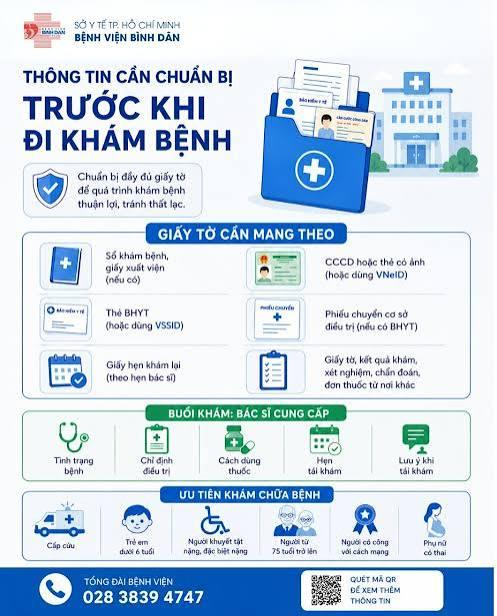
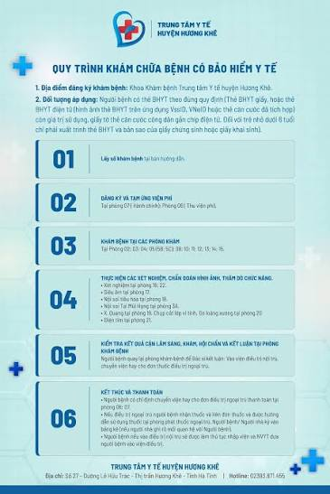
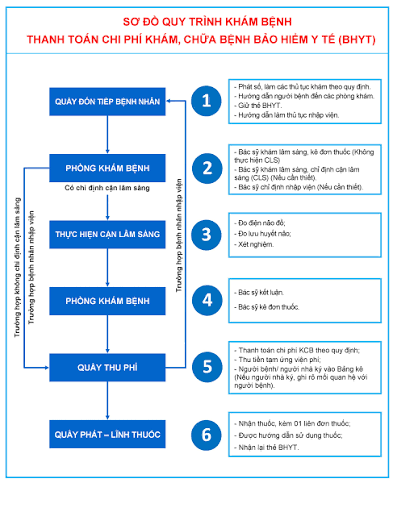

Chuẩn bị kỹ lưỡng - Thăm khám an tâm, tiết kiệm thời gian và chi phí.

Ảnh minh họa: Chuẩn bị đầy đủ giấy tờ tùy thân và BHYT

Ảnh minh họa: Nhịn ăn sáng nếu cần thực hiện xét nghiệm
Nắm rõ 5 bước cơ bản để không bị bỡ ngỡ khi đến bệnh viện.
Lấy số thứ tự, nộp CCCD/BHYT tại quầy tiếp đón. Đóng tạm ứng phí khám ban đầu và nhận sổ khám kèm số phòng.
Điều dưỡng đo sinh hiệu (huyết áp, chiều cao, cân nặng). Gặp bác sĩ chuyên khoa để trình bày triệu chứng và nhận chỉ định cận lâm sàng.
Đóng phí các chỉ định cận lâm sàng. Di chuyển đến các phòng xét nghiệm máu, siêu âm, X-Quang, MRI... và chờ lấy kết quả.
Cầm toàn bộ kết quả quay lại phòng khám ban đầu. Bác sĩ giải thích tình trạng bệnh, chẩn đoán cuối cùng và kê đơn thuốc hoặc tư vấn nhập viện.
Đóng dấu BHYT (nếu có), thanh toán nốt viện phí phát sinh. Nhận thuốc tại quầy dược bệnh viện, kiểm tra kỹ hướng dẫn sử dụng và nhận lại giấy tờ tùy thân.
